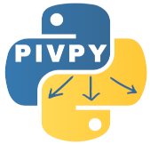

PIVPyPython-based post-processing PIV data analysis in the repo: https://github.com/openpiv/pivpy


Merging the three packages: 1. https://github.com/tomerast/Vecpy 2. https://github.com/alexlib/pivpy/tree/xarray 3. https://github.com/ronshnapp/vecpy
How do I get set up?
Recommended: use uv (fast, reproducible)
Create a virtualenv and install:
uv venv
uv pip install pivpy
Install this repository (editable / development install):
uv venv
uv pip install -e .
Install with optional dependencies (including lvpyio for LaVision VC7):
uv pip install 'pivpy[full]'
Run in a sandbox (isolated) environment (no persistent venv required):
uv run --isolated --with pivpy python -c "import pivpy; print(pivpy.__version__)"
Or run with optional dependencies in the sandbox:
uv run --isolated --with "pivpy[full]" python -c "from pivpy import io; print(io)"
Run using a specific Python version (uv-managed) in the sandbox:
uv python install 3.14
uv run --isolated --managed-python -p python3.14 --with pivpy python -c "import sys, pivpy; print(sys.version.split()[0], pivpy.__version__)"
Run this repository's tests on Python 3.14 (sandboxed):
uv run --isolated --managed-python -p python3.14 --with-editable . pytest -q
Alternative: use pip:
pip install pivpy
or with optional dependencies:
pip install 'pivpy[full]'
if you use OpenPIV, PIVlab, etc.
Quick start (auto-detect file format):
from pivpy import io
ds = io.read_piv('your_file.vec')
Getting Started
Load experimental PIV data or generate analytical flow fields, and visualize publication-quality flow fields with zero effort:
import matplotlib.pyplot as plt
import pivpy.pivpy # registers the .piv accessor
from pivpy import synthetic
# 1. Generate an analytical multi-vortex 2D turbulence field (or use io.read_piv)
ds = synthetic.multivortex(n_frames=1, n=128, n_vortices=8, two_d=True, seed=42)
# 2. Zero-effort, publication-quality plot (vorticity background, streamlines & auto-scaled vectors)
fig, ax = ds.piv.plot()
plt.show()

Dynamic Flow Animations
Animate time-series datasets with in-place vector updates (set_UVC) and dynamic vorticity tracking:
# 1. Generate or load time-series flow data (e.g. interacting vortex pair)
ds = synthetic.vortex_pair(n_frames=24, n=128)
# 2. Animate with one call
anim = ds.piv.animate(interval=80)
# Save as GIF / MP4 or display in Jupyter / Marimo
anim.save("vortex_interaction.gif")

Customizing Your Plots
Every visual layer can be easily tailored or toggled:
# Velocity magnitude background with vectors only (no streamlines)
fig, ax = ds.piv.plot(
background="mag", # 'vorticity' (default), 'mag', 'ke', 'divergence', or None
streamlines=False, # toggle flow streamlines
quiver=True, # toggle velocity vectors
blur=1.5, # smooth fluid color gradient
arrow_scale=0.75, # custom vector arrow scale
title="Velocity Magnitude & Vectors",
)
# Clean vector quiver only (no background)
fig, ax = ds.piv.plot(background=None)
Legacy loaders (still supported):
ds = io.load_vec('your_file.vec')
ds = io.load_openpiv_txt('your_file.txt')
Check whether a newer version is available on PyPI:
import pivpy
res = pivpy.check_update(verbose=True)
# res.status: 0=unavailable, 1=up-to-date, 2=update available, 3=installed newer
PIVMat-inspired methods
PIVPy exposes many post-processing operations via the xarray accessor Dataset.piv.
Several common PIVMat toolbox methods are available with similar names/behavior:
import pivpy.pivpy # registers the .piv accessor
from pivpy import io
ds = io.create_sample_Dataset(n_frames=10)
# Add noise (similar to PIVMat addnoisef)
ds_noisy = ds.copy().piv.addnoisef(eps=0.1, opt='add', nc=0.0, seed=0)
# Ensemble (temporal) average and optional std/rms (similar to PIVMat averf)
avg = ds.piv.averf()
avg, std, rms = ds.piv.averf(return_std_rms=True)
# Spatial averages (similar to PIVMat spaverf)
ds_xy = ds.piv.spaverf('xy') # excludes zeros by default
ds_x0 = ds.piv.spaverf('x0') # include zeros
# Subtract ensemble/spatial average (similar to PIVMat subaverf)
fluct = ds.piv.subaverf('e')
fluct_x = ds.piv.subaverf('x0')
# Azimuthal averaging (similar to PIVMat azaverf)
r, ur, ut = ds.isel(t=0).piv.azaverf(0.0, 0.0, return_profiles=True)
# Temporal resampling and phase average (similar to PIVMat resamplef/phaseaverf)
ds_r = ds.piv.resamplef(tini=range(ds.sizes['t']), tfin=[0.5, 1.5, 2.5])
phased = ds.piv.phaseaverf(12)
Additional PIVMat-inspired utilities:
# Correlation along a dimension (similar to PIVMat corrm/corrx)
cu = ds.piv.corrm(variable='u', dim='x') # returns DataArray with a 'lag' dimension
cv = ds.piv.corrm(variable='v', dim='y', half=True)
# Spatial correlation function + integral scales (similar to PIVMat corrf)
cor = ds.piv.corrf(variable='u', dim='x', normalize=True)
# correlation curve: cor['f'] over cor['r']
# integral scales: cor['isinf'], cor['is5'], cor['is2'], cor['is1'], cor['is0']
# Fill holes encoded as zeros (similar to PIVMat interpolat.m behavior)
ds_filled = ds.piv.fill_zeros(max_iter=10)
# Extract a rectangular region (similar to PIVMat extractf)
sub = ds.piv.extractf([0.0, 0.0, 10.0, 5.0], 'phys') # [x1,y1,x2,y2] in physical units
sub = ds.piv.extractf([10, 5, 50, 40], 'mesh') # 1-based mesh indices (MATLAB-like)
# Spatial convolution filter (similar to PIVMat filterf)
ds_smooth = ds.piv.filterf(1.0, 'gauss', 'same') # keep same size
ds_smooth_valid = ds.piv.filterf(1.0, 'gauss') # smaller (conv2(...,'valid') behavior)
# Flip field (similar to PIVMat flipf)
ds_lr = ds.piv.flipf('x') # left-right mirror (negates u)
ds_tb = ds.piv.flipf('y') # top-bottom mirror (negates v)
ds_xy = ds.piv.flipf('xy') # both
# 2D Butterworth filter (similar to PIVMat bwfilterf)
ds_low = ds.piv.bwfilterf(filtsize=3.0, order=8.0, mode='low', trunc=True)
ds_high = ds.piv.bwfilterf(filtsize=3.0, order=8.0, mode='high')
# PIVMat-style option wrapper: opts can include 'high'/'low'/'trunc'
ds_high2 = ds.piv.bwfilterf_pm(3.0, 8.0, 'high', 'trunc')
# Batch processing over filename series (similar to PIVMat batchf)
# fun can be a callable (fun(ds, ...)) or an accessor method name (e.g. 'averf', 'bwfilterf')
from pivpy.io import batchf
results = batchf('pivpy/data/day2/day2a00500[0:5].T000.D000.P003.H001.L.vec', 'averf')
For developers, local use:
Using uv (recommended):
git clone https://github.com/alexlib/pivpy .
cd pivpy
uv venv
uv pip install -e .
Editable install with optional dependencies:
uv pip install -e '.[full]'
Alternative (conda):
git clone https://github.com/alexlib/pivpy .
cd pivpy
conda create -n pivpy python=3.11
conda activate pivpy
conda install pip
pip install -e .
What packages are required and which are optional
lvpyioby Lavision Inc. if you use vc7 filesnetcdf4if you want to store NetCDF4 files by xarraypyarrowif you want to store parquet filesvortexfittingif you want to do vortex analysis ($\lambda_2$ and $Q$ criterions, vortex fitting)numpy,scipy,matplotlib,xarrayare must and installed with thepivpy
Contributors
- @alexlib
- @ronshnapp - original steps
- @liorshig - LVreader and great visualizaiton for Lavision
- @nepomnyi - connection to VortexFitting and new algorithms
How to get started?
Look into the getting started marimo notebook
(open it with uv run marimo edit examples/notebooks/Getting_Started.py, or click the
"Open in molab" badge above to run it in your browser)
and additional notebooks: Notebooks
How to test?
From a command line just use:
pytest
With uv:
uv run pytest -q
Documentation
- PIVPy on GitHub Pages (MkDocs, with live interactive marimo notebooks)
- PIVPy on ReadTheDocs (mirrors the same MkDocs documentation)
How to help?
Read the ToDo file and pick one item to program. Use Fork-Develop-Pull Request model to contribute
How to write tutorials and add those to the documentation
Tutorials live as marimo notebooks (.py files) in docs/source/. The docs are built
with MkDocs (mkdocs.yml, pages under docs_mkdocs/); the
mkdocs-marimo plugin embeds them live
(editable, running in the browser via Pyodide) -- no separate conversion step needed:
uv pip install -r docs_mkdocs/requirements.txt
uv run mkdocs build
generates a site/ directory with the documentation. uv run mkdocs serve runs a
live-reloading local preview.